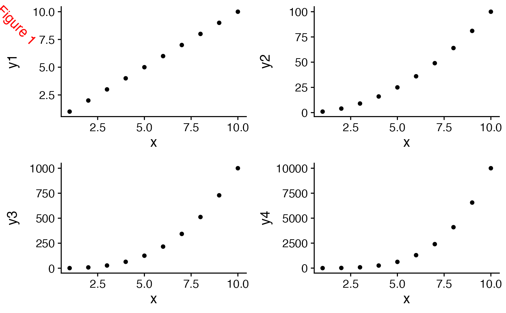

Add a label to a figure
draw_figure_label.RdThe main purpose of this function is to add labels specifying extra information about
the figure, such as "Figure 1", or "A" - often useful in cowplots with more than
one pane. The function is similar to draw_plot_label.
draw_figure_label(label, position = c("top.left", "top", "top.right", "bottom.left", "bottom", "bottom.right"), size, fontface, ...)
Arguments
| label | Label to be drawn |
|---|---|
| position | Position of the label, can be one of "top.left", "top", "top.right", "bottom.left", "bottom", "bottom.right". Default is "top.left" |
| size | (optional) Size of the label to be drawn. Default is the text size of the current theme |
| fontface | (optional) Font face of the label to be drawn. Default is the font face of the current theme |
| ... | other arguments passed to |
See also
Examples
library(ggplot2) df <- data.frame( x = 1:10, y1 = 1:10, y2 = (1:10)^2, y3 = (1:10)^3, y4 = (1:10)^4 ) p1 <- ggplot(df, aes(x, y1)) + geom_point() p2 <- ggplot(df, aes(x, y2)) + geom_point() p3 <- ggplot(df, aes(x, y3)) + geom_point() p4 <- ggplot(df, aes(x, y4)) + geom_point() # Create a simple grid p <- plot_grid(p1, p2, p3, p4, align = 'hv') # Default font size and position p + draw_figure_label(label = "Figure 1")# Different position and font size p + draw_figure_label(label = "Figure 1", position = "bottom.right", size = 10)# Using bold font face p + draw_figure_label(label = "Figure 1", fontface = "bold")# Making the label red and slanted p + draw_figure_label(label = "Figure 1", angle = -45, colour = "red")# Labeling an individual plot ggdraw(p2) + draw_figure_label(label = "Figure 1", position = "bottom.right", size = 10)